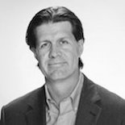

Michael Burnstein
San Francisco-Based Estate Planning Attorney
Experience
Zaffre Law / Founder / 2013 to Present
Modern law firm specializing in estate planning, administration, and charitable organizations.
Golden Gate University School of Law / Adjunct Professor / 2006 to Present
Courses taught include Tax Aspects of Charitable Giving, Income Taxation of Estates and Trusts, Generation-Skipping Transfer Tax, and Special Valuation Rules of Chapter 14.
Schiff Hardin LLP / Equity Partner and West Coast Practice Leader / 2008 to 2013
Practice focused on estate planning for high net worth individuals and formation and representation of charitable organizations.
Heller Ehrman LLP / Special Counsel, 2003 to 2006 / Shareholder and Practice Leader, 2007 to 2008
Practice focused on estate planning for high net worth individuals and formation and representation of charitable organizations.
Pillsbury Winthrop Shaw Pittman / Associate / 1997 to 2003
Practice focused on estate planning for high net worth individuals and formation and representation of charitable organizations.
United States Tax Court / Attorney-Advisor / 1995 to 1997
Drafted judicial opinions for the Hon. Maurice B. Foley.
Education
- New York University School of Law / LL.M. / 2002
- St. John's University School of Law / J.D. / 1995
- St. John's Graduate School of Business / M.B.A. / 1995
- St. John's University / B.S. / 1992
Activities
- Former President, San Francisco Estate Planning Council
- Former Board Member, Bay Area Make-A-Wish Foundation
- Former Member, Executive Committee of the State Bar, Trusts and Estates Section
- Former Member, USTA Norcal Grievance Committee
- USPTA certified tennis teaching professional